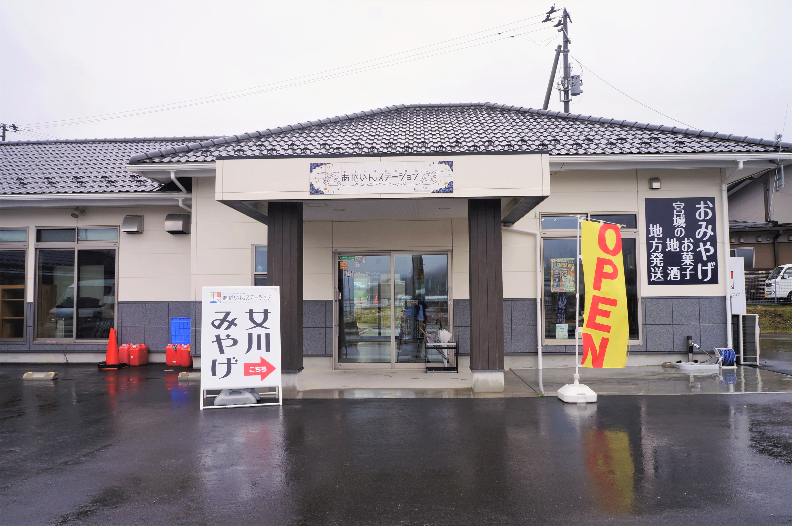
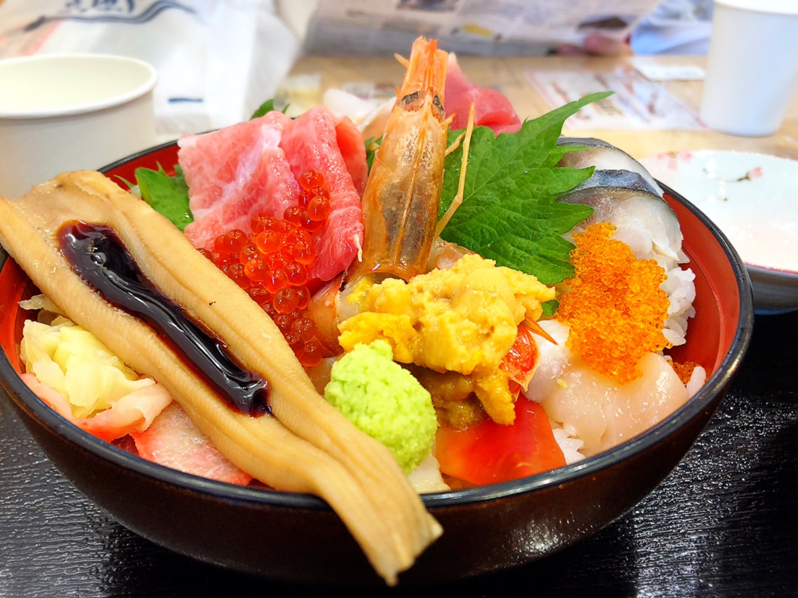
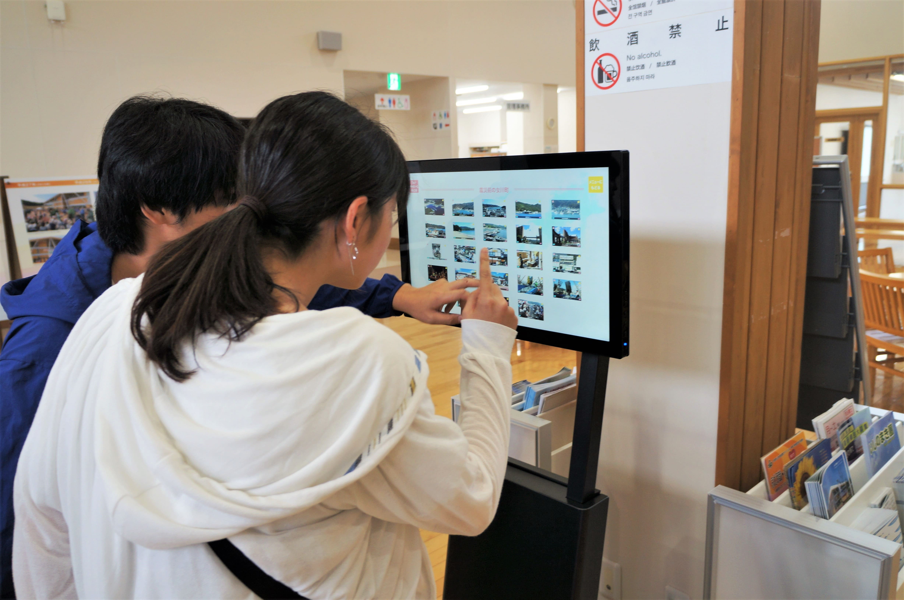
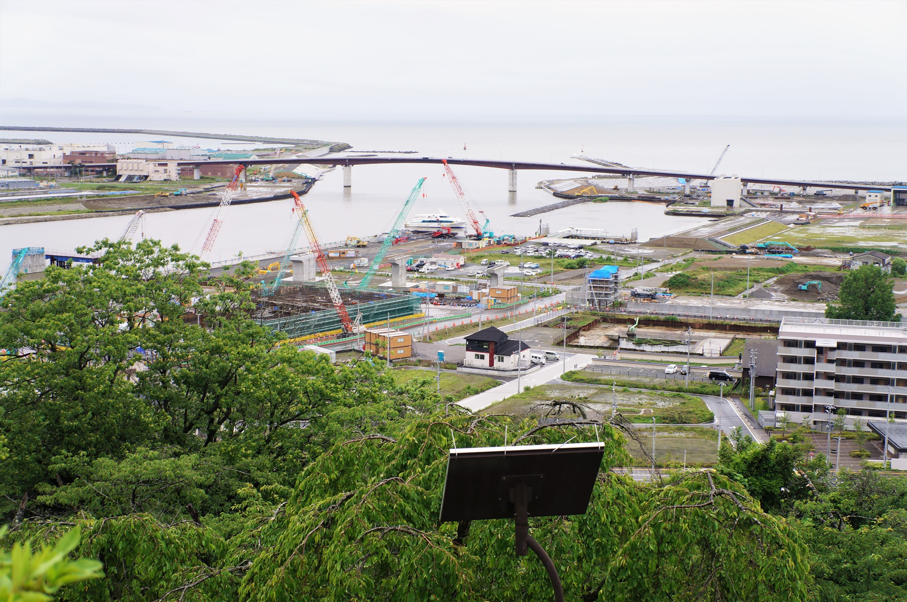

活 動 記 録
活動記録
ACTIVITY
2019年6月29日(土)・30日(日)に
メンバー4人で女川と石巻に行ってきました！
早朝に東京を出発して、お昼に女川に着きました。
少し女川駅前のシーパルピアをお散歩して、
マルシェでお世話になっている三陸石鹸工房KURIYAの
厨さんにご挨拶に伺いました。
その後遅めのお昼ご飯を食べて
あがいんステーションに行きました。

その周辺には3.11の津波で倒れた交番が
震災遺構として残されていました。
夜は女川駅に併設されている温泉・ゆぽっぽに行きました。
シーパルピア内の「居酒屋カフェ」で夜ご飯を食べて
ホテルでゆっくり過ごしました。
次の日は、
女川町役場で観光協会長の阿部さんとお会いしました。
街のPRについて、街づくりについてお話を伺いました。
女川町長の須田さんともお話することができました。
そのあとは、お昼ご飯を食べて
女川まちなか交流館で資料を見て石巻に向かいました。

石巻では、
公益社団法人みらいサポート石巻さんが提供している
アプリ「石巻津波伝承AR」を使って当時の被災状況と
今を比べながらお散歩しました。
春合宿でも行った日和山公園にも行きました。
その後、夜ご飯を食べて、温泉に入ってから東京に帰りました。
ゆっくりくつろげる素敵な旅行でした。
厨さん、阿部さん、須田さん、
お忙しい中お時間をいただいてありがとうございました。
今度は晴れているときに行きたいですね。（K.M.）
続々更新中!
keep updating...